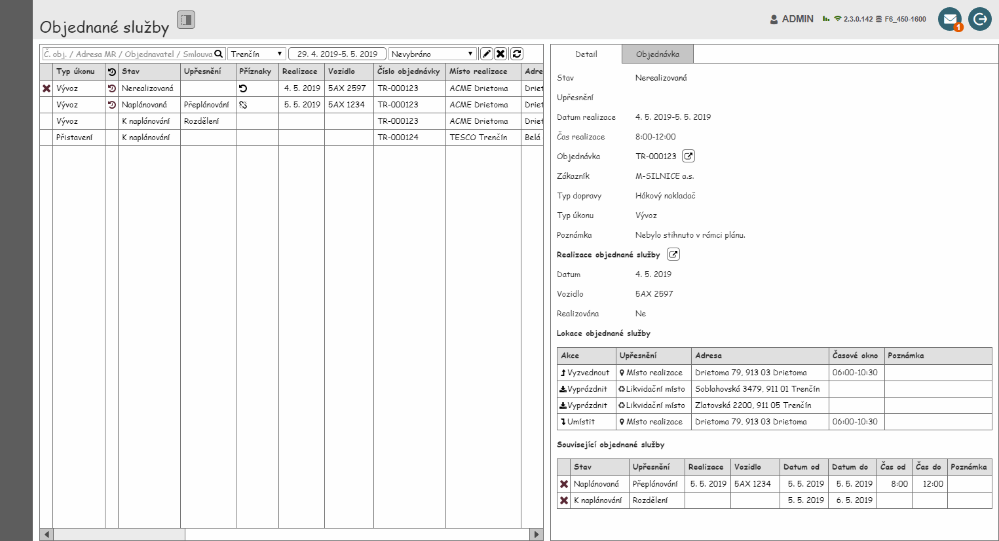
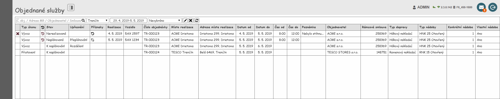
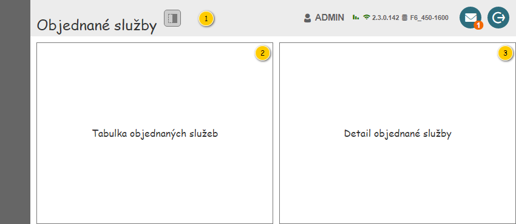
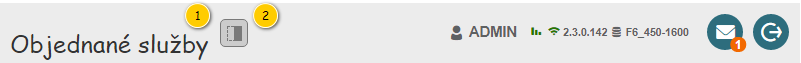

Stručný popis
Uživatelské rozhraní poskytuje uživateli přístup k Objednaným službám. Dále mu umožňuje spouštět další akce ke konkrétním Objednaným službám a využít nástroje pro filtrování a řazení Objednaných služeb. Na vstupu pak mohou být předána vstupní data specifikující zobrazení Objednaných služeb:
- Provozovna,
- Období,
- Typ dopravy.
Poznámka:
- Pokud nejsou vstupní data k dispozici, jsou použity výchozí hodnoty.
- Buď jsou nastaveny všechny tři parametry zároveň, nebo není použit ani jeden z nich. Není tedy možné nastavit část parametrů dle vstupních dat a část dle výchozího nastavení.
Uživatelské rozhraní
Nejdříve jsou uvedeny drátové diagramy celé obrazovky (se zobrazeným detailem a bez něj). Dále jsou pak popsány jednotlivé ucelené části uživatelského rozhraní.


Rozložení
Drátový diagram

Přehled UI komponent
| Callout | Skupina |
|---|---|
| 1 | Nadpis obrazovky |
| 2 | Tabulka objednaných služeb |
| 3 | Detail objednané služby |
Nadpis obrazovky
Drátový diagram

Přehled UI komponent
| Callout | Komponenta | Nadpis | Typ komponenty | Příklad hodnoty | Hodnota | Výchozí hodnota | Formát | Zpřístupněná | Viditelná | Chování | Validace | Poznámka |
|---|---|---|---|---|---|---|---|---|---|---|---|---|
| 1 | Nadpis obrazovky | – | Label | – | Objednané služby | – | – | – | Vždy | – | – | – |
| 2 | Zobrazení/skrytí panelu s detailními informacemi | – | ToggleButton | – | Ikona: ra-panel-top.
| – | Text pro ToolTip: Detail. | Vždy | Vždy | Pokud je tlačítko stisknuto, je zobrazen panel s detailními informacemi. Pokud tlačítko stisknuto není, je panel s detailními informacemi skrytý. | – | – |
Tabulka objednaných služeb
Není možné označit více řádků tabulky zároveň.
Drátový diagram

Poznámka: Drátový diagram je pouze ilustrativní.
Přehled UI komponent
Pokud uživatel vjede myší na prvek nástrojové lišty, je zobrazen ToolTip. V rámci ToolTipu, pokud není uvedeno jinak, je zobrazen text ve sloupci Komponenta.
| Pořadí | Komponenta | Nadpis | Typ komponenty | Příklad hodnoty | Hodnota | Výchozí hodnota | Formát | Zpřístupněná | Viditelná | Chování | Validace | Poznámka |
|---|---|---|---|---|---|---|---|---|---|---|---|---|
| 1 | Textový filtr | – | Full Text Filter (viz Ovládací prvky třetích stran)
| – | – | – | Pokud není v rámci ovládacího prvku zadán hledaný text, jsou na pozadí (placeholder) vypsány názvy sloupců, podle kterých je filtrováno (viz sloupce Chování). Mezi jednotlivými názvy sloupců je použit oddělovač: „/“. Tento text je zobrazován i v rámci bublinkové nápovědy ovládacího prvku. Chování je pak řešeno v rámci použité komponenty. | Vždy | Vždy | Psaním filtruje řádky dle sloupců:
Ve sloupcích je vyhledáváno fulltextově. Pokud není zadán žádný text, jsou zobrazeny všechny Objednané služby. | – | – |
| 2 | Vybrat provozovnu | – | ComboBox
Pokud má uživatel právo na právě jednu Provozovnu, je ovládací prvek v režimu pro čtení. Není tedy možné rozbalit kontextovou nabídku. | Trenčín | Entita Provozovna. Dostupné jsou takové Provozovny, které splňují zároveň všechny uvedené podmínky:
Kromě dostupných Provozoven je obsažena i možnost Nevybráno, která je zobrazena jako první. Pokud má uživatel právo na právě jednu Provozovnu, není možnost Nevybráno k dispozici. | Pokud má uživatel právo na více než jednu Provozovnu:
Jinak:
| Vždy | Vždy | Po výběru Provozovna se načtou odpovídající Objednané služby – viz Načtení objednaných služeb. | – | Provozovna může být vybrána dle dat předaných na vstupu. | |
| 3 | Vybrat období | – | Button
Obsahuje tlačítko pro zrušení nastaveného období. | 29. 4. 2019-5. 5. 2019 | Jedná se o výstup nabídky pro nastavení období – položky Datum od, Datum do. Je umožněno „nenastavit“ požadované období. | Nenastaveno | Při nezadaném období zobrazuje text "Období neomezeno". | Vždy | Vždy | Po stisknutí tlačítka se zobrazí kontextová nabídka pro výběr období po dnech – viz Výběr období po dnech. V nabídce je zobrazen aktuálně nastavené období. Po výběru či zrušení období se načtou odpovídající Objednané služby – viz Načtení objednaných služeb. | – | Období může být nastaveno dle dat předaných na vstupu. |
| 4 | Vybrat typ dopravy | – | ComboBox
| Hákový nakladač | Entita Typ dopravy. Kromě možnosti Nevybráno (zobrazena jako v pořadí první položka) jsou k dispozici všechny takové Typy dopravy, u kterých je hodnota atribut Je k dispozici nastavena na TRUE. | Nevybráno | Vždy | Vždy | Po výběru Typu dopravy se načtou odpovídající Objednané služby – viz Načtení objednaných služeb. | – | Typ dopravy může být vybrán dle dat předaných na vstupu. | |
| 5 | Jen objednané služby na výzvu | – | Rychlý filtr (ToggleButton)
| – | – | Není stisknuto | – | Vždy | Vždy | Pokud je tlačítko stisknuto, jsou k dispozici pouze takové Objednané služby, u kterých je hodnota atributu Vytvořena na výzvu rovna TRUE. Jinak není dle tohoto kritéria filtrováno. | – | – |
| 6 | Jen objednané služby se zadaným druhem odpadu | – | Rychlý filtr (ToggleButton)
| – | – | Není stisknuto | – | Vždy | Vždy | Filtr objednaných služeb dle druhu odpadu | – | – |
| 7 | Jen objednané služby se zadaným likvidačním místem | – | Rychlý filtr (ToggleButton)
| – | – | Není stisknuto | – | Vždy | Vždy | Filtr objednaných služeb dle likvidačního místa | – | – |
| 8 | Vytvořit objednanou službu na výzvu | – | Button
| – | – | – | – | Vždy | Pokud jsou splněny vstupní podmínky voleného alternativního toku. Pokud je označena alespoň jedna Objednaná služba. Pokud byla poslední označená Objednaná služba vytvořena na výzvu – hodnota atribut Vytvořena na výzvu je rovna TRUE. | Spustí , na vstup UC jsou předány následující hodnoty:
| – | Odpovídající Objednávka musí být ve stavu, který umožňuje generování Objednaných služeb (viz volaný alternativní tok). |
| 9 | Editovat objednanou službu | – | Button
| – | – | – | – | Vždy | Pokud má uživatel právo na editaci Objednané služby (EDIT_RP_SERVICE_ORDERS, viz Oprávnění na typ entity). Pokud je vybrána Objednaná služba. | Spustí , na vstup UC jsou předány následující hodnoty:
| – | Možnost a rozsah editace v rámci formuláře je dán stavem odpovídající Objednané služby. |
| 10 | Zrušit objednanou službu | – | Button
| – | – | – | – | Vždy | Pokud má uživatel právo na editaci Objednané služby (EDIT_RP_SERVICE_ORDERS, viz Oprávnění na typ entity). Pokud je vybrána Objednaná služba. Pokud je poslední vybraná Objednaná služba v jednom z uvedených stavů:
| Spustí , na vstup UC jsou předány následující hodnoty:
| – | – |
| 11 | Exportovat objednané služby | – | Tlačítko
| – | – | – | – | Vždy | Pokud je viditelná alespoň jedna z obsažených položek. | Po stisknutí dojde k rozbalení kontextové nabídky (viz dílčí položky). | – | – |
| 11.1 | Exportovat do CSV | Exportovat do CSV | Button
| – | – | – | – | Vždy | Pokud jsou splněny vstupní podmínky volaného chování. | Po stisknutí dojde ke spuštění Exportovat objednané služby v CSV. | – | – |
| 11.2 | Exportovat do XLSX | Exportovat do XLSX | Button
| – | – | – | – | Vždy | Pokud jsou splněny vstupní podmínky volaného chování. | Po stisknutí dojde ke spuštění Exportovat objednané služby v XLSX. | – | – |
| 12 | Obnovit data | – | Button
| – | – | – | – | Vždy | Vždy | Po stisknutí tlačítka se načtou odpovídající Objednané služby – viz Načtení objednaných služeb. | – | – |
Chování
Načtení objednaných služeb
Pokud dojde k situaci, kdy mají mají být načteny Objednané služby, je nutné na základě vstupních dat vyhodnotit, které Objednané služby mají být zobrazeny – je spuštěn , na vstup UC jsou předány následující hodnoty:
- Provozovna: hodnota nastavená v poli s výběrem Provozovny (komponenta 2), pokud je zvolena možnost nevybráno, je předáno NULL.
- Období: hodnota nastavená v poli s výběrem období (komponenta 3), pokud není k dispozici, je předáno NULL.
- Typ dopravy: hodnota nastavená v poli s výběrem Typ dopravy (komponenta 4), pokud je zvolena možnost nevybráno, je předáno NULL.
V případě, že nejsou načtena žádná data (žádná Objednaná služba neodpovídá zadaným parametrům), je zobrazena prázdná tabulka.
Filtr objednaných služeb dle druhu odpadu
Filtr slouží k nalezení takových Objednaných služeb, ke kterým je přiřazen uživatelem zadaný Druh odpadu. Při nastavení filtru je pak nutné brát v potaz i aktuální stav odpovídajícího tlačítka, od něj se odvíjí samotné chování (viz tabulka).
| Stav | Chování |
|---|---|
| Tlačítko není stisknuto (filtr není nastaven) |
|
| Tlačítko je stisknuto (filtr je nastaven) |
|
Filtr objednaných služeb dle likvidačního místa
Filtr slouží k nalezení takových Objednaných služeb, ke kterým je přiřazeno uživatelem zadané Likvidační místo. Samotné chování filtru je pak složeno ze 2 částí – nastavení/zrušení filtru a samotné filtrování záznamů.
| Stav | Chování |
|---|---|
| Tlačítko není stisknuto (filtr není nastaven) |
|
| Tlačítko je stisknuto (filtr je nastaven) |
|
Exportovat objednané služby v CSV
Cílem algoritmu je export tabulky do CSV – v takové podobě, v jaké ji vidí uživatel.
Vstupní podmínky
- Jsou splněny vstupní podmínky v rámci 707UC01: Exportovat do CSV.
Tok událostí
- Systém vyhodnotí dostupnost exportu (viz Vyhodnocení možnosti exportu).
- Může dojít k předčasnému ukončení tohoto algoritmu.
- Může dojít k předčasnému ukončení tohoto algoritmu.
- Systém zobrazí systémové hlášení s informací o probíhajícím exportu – spustí 700UI06: Systémové hlášky, na vstup jsou předány následující informace:
- Kód systémového hlášení: MSG_INFO_EXPORT_IN_PROGRESS (viz Systémové hlášky).
- Kód systémového hlášení: MSG_INFO_EXPORT_IN_PROGRESS (viz Systémové hlášky).
- Systém odešle požadavek na export objednaných služeb ve formátu CSV – spustí 707UC01: Exportovat do CSV, na vstup jsou předány následující informace:
- Název souboru: ObjednaneSluzby_
, kde hodnota parametru Datum odpovídá dnešnímu datu (formát: Systémové datum; příklad hodnoty: ObjednaneSluzby_2022-06-24). - Řádky: viz Získání objednaných služeb pro export.
- Název souboru: ObjednaneSluzby_
- Systém zavře systémové hlášení o probíhajícím exportu.
- Pokud proběhne export tiskové sestavy v pořádku:
- Systém předá vygenerovaný soubor uživateli (viz 707UC01: Exportovat do CSV, výstupní parametr Soubor) – začne stahování souboru.
- Jinak dojde k provedení následujících kroků:
- Systém zobrazí systémové hlášení – spustí 700UI06: Systémové hlášky, na vstup jsou předány následující informace:
- Kód systémového hlášení: výstupní data získaná v rámci exportu objednaných služeb (viz 707UC01: Exportovat do CSV, výstupní parametr Chybové hlášení).
- Uživatel potvrdí systémové hlášení.
- Systém zavře systémové hlášení.
- Systém zobrazí systémové hlášení – spustí 700UI06: Systémové hlášky, na vstup jsou předány následující informace:
Výstupní podmínky
- Byl vygenerován soubor ve formátu CSV, který obsahuje odpovídající záznamy.
Exportovat objednané služby v XLSX
Cílem algoritmu je export tabulky do XLSX – v takové podobě, v jaké ji vidí uživatel.
Vstupní podmínky
- Jsou splněny vstupní podmínky v rámci 707UC02: Exportovat do XLSX.
Tok událostí
- Systém vyhodnotí dostupnost exportu (viz Vyhodnocení možnosti exportu).
- Může dojít k předčasnému ukončení tohoto algoritmu.
- Systém zobrazí systémové hlášení s informací o probíhajícím exportu – spustí 700UI06: Systémové hlášky, na vstup jsou předány následující informace:
- Kód systémového hlášení: MSG_INFO_EXPORT_IN_PROGRESS (viz Systémové hlášky).
- Kód systémového hlášení: MSG_INFO_EXPORT_IN_PROGRESS (viz Systémové hlášky).
- Systém odešle požadavek na export objednaných služeb ve formátu XLSX – spustí 707UC02: Exportovat do XLSX, na vstup jsou předány následující informace:
- Název souboru: ObjednaneSluzby_
, kde hodnota parametru Datum odpovídá dnešnímu datu (formát: Systémové datum; příklad hodnoty: ObjednaneSluzby_2022-06-24). - Název listu: Objednané služby.
- Řádky: viz Získání objednaných služeb pro export.
- Je hlavička: TRUE.
- Název souboru: ObjednaneSluzby_
- Systém zavře systémové hlášení o probíhajícím exportu.
- Pokud proběhne export tiskové sestavy v pořádku:
- Systém předá vygenerovaný soubor uživateli (viz 707UC02: Exportovat do XLSX, výstupní parametr Soubor) – začne stahování souboru.
- Jinak dojde k provedení následujících kroků:
- Systém zobrazí systémové hlášení – spustí 700UI06: Systémové hlášky, na vstup jsou předány následující informace:
- Kód systémového hlášení: výstupní data získaná v rámci exportu objednaných služeb (viz 707UC02: Exportovat do XLSX, výstupní parametr Chybové hlášení).
- Uživatel potvrdí systémové hlášení.
- Systém zavře systémové hlášení.
- Systém zobrazí systémové hlášení – spustí 700UI06: Systémové hlášky, na vstup jsou předány následující informace:
Výstupní podmínky
- Byl vygenerován soubor ve formátu XLSX, který obsahuje odpovídající záznamy.
Získání objednaných služeb pro export
Při exportu Objednaných služeb do souboru pracujeme s informacemi, které jsou načteny v tabulce (bez ohledu na stránkování). Zajímají nás tedy nejen odpovídající Objednané služby (nastavené filtry), ale i dostupné informace o nich (zobrazené sloupce). Na vstupu případů užití pro export pak pracujeme přímo se zobrazenými hodnotami, jejich struktura je následující:
- Řádek – odpovídá konkrétnímu řádku tabulky (včetně hlavičky).
- Položka řádku – odpovídá konkrétní buňce daného řádku (formát hodnoty je totožný jako v tabulce, včetně hlavičky).
My tedy při odeslání požadavku na server musíme specifikovat, jaké záznamy budou na vstup UC pro export předány a v jakém rozsahu (příprava výsledného souboru probíhá na serveru, z uživatelského rozhraní je odeslána pouze zmíněná specifikace). Využito pak může být stejné API, jako používá tabulka. Myslet je pak třeba na následující skutečnosti:
- není využito stránkování (k dispozici budou všechny Objednané služby, které odpovídají všem nastaveným filtrům),
- dostupné Objednané služby odpovídají všem nastaveným filtrům v tabulce i mimo ni v době exportu (omezení daná případem užití, sloupcové filtry tabulky, další filtry mimo tabulku…),
- pořadí Objednaných služeb odpovídá řazení tabulky v době exportu (specifikace sloupce včetně směru řazení),
- dostupné informace o Objednané službě se mohou měnit (výsledná množina odpovídá nastavení viditelnosti sloupců tabulky v době exportu),
- pořadí informací o Objednané službě se může měnit (výsledné pořadí odpovídá nastavení tabulky v době exportu),
- formát informací o Objednané službě odpovídá tomu v tabulce (výsledná hodnota je totožná na obou místech).
Jednotlivé řádky, které jsou předány na vstup UC pro export, odpovídají následujícímu schématu:
- Vložení hlavičky – jako první řádek je vložena hlavička tabulky, její struktura a rozsah odpovídá uvedené specifikaci.
- Vložení záznamů – následně jsou vkládány jednotlivé Objednané služby (řádky tabulky), jejich struktura i rozsah je dána uvedenou specifikací.
Vyhodnocení možnosti exportu
Export může být omezen dalšími pravidly. Pokud nejsou splněny určité podmínky, není možné export provést. Aktuálně jsou vyhodnocována následující kritéria:
- Množství exportovaných záznamů – počet záznamů pro export nesmí přesáhnout určitou mez.
Postup při vyhodnocení možnosti exportu je pak následující…
- Systém získá informace související s počtem záznamů:
- Počet exportovaných záznamů: celkový počet záznamů pro export (viz Získání objednaných služeb pro export).
- Maximální počet exportovaných záznamů: konfigurační hodnota exportMaxNumberOfRecords (viz Konfigurační hodnoty).
- Pokud je Počet exportovaných záznamů menší nebo roven Maximálnímu počtu exportovaných záznamů:
- Systém pokračuje v exportu.
- Jinak je Počet exportovaných záznamů větší než Maximální počet exportovaných záznamů – systém provede dále uvedené akce:
- Systém zobrazí systémové hlášení – spustí 700UI06: Systémové hlášky, na vstup jsou předány následující informace:
- Kód systémového hlášení: MSG_INFO_EXPORT_MAX_NUMBER_OF_RECORDS_EXCEEDED (viz Systémové hlášky).
- Maximální počet záznamů: konfigurační hodnota exportMaxNumberOfRecords (viz Konfigurační hodnoty).
Uživatel potvrdí systémové hlášení.
Systém zavře systémové hlášení.
- Export je předčasně ukončen.
- Systém zobrazí systémové hlášení – spustí 700UI06: Systémové hlášky, na vstup jsou předány následující informace:
Tabulky
Objednané služby
Pro zobrazení záznamů v přehledu je použita běžná tabulka, viz 700UI01: Komponenty – tabulka. Z toho vyplývají jak její základní vlastnosti, tak i výchozí nastavení (např. počet záznamů, které je možné označit).
Tabulka vychází z jejího obecného popisu – viz 700UI01: Komponenty – tabulka.
Tabulka je ve výchozím stavu řazena vzestupně podle sloupce Datum realizace od.
| Sloupec | Nadpis | Typ komponenty | Příklad hodnoty | Hodnota | Výchozí hodnota | Formát | Možnosti sloupce | Zpřístupněný | Viditelný | Chování | Validace | Poznámka |
|---|---|---|---|---|---|---|---|---|---|---|---|---|
| Realizována | – V rámci nastavení viditelnosti sloupců je nadpis následující:
| TextBox | – | Entita Objednaná služba. | – | Hodnota je reprezentována ikonou dle stavu Objednané služby (atribut Stav):
|
| Nikdy | Vždy | Pokud je zobrazena ikona a uživatel na ni najede myší, je zobrazen ToolTip s dříve uvedeným textem. | – | – |
| Typ úkonu | Typ úkonu | TextBox | Vývoz | Entita Objednaný úkon – atribut Objednaný úkon entity Objednaná služba. | – |
| Nikdy | Vždy | – | – | – | |
| Navazující služba | Ikona: ra-reclamation. V rámci nastavení viditelnosti sloupců je nadpis složen z uvedené ikony, která je doplněna o text, a to následovně: | TextBox | – | Entita Objednaná služba. | – | Hodnota je reprezentována ikonou dle toho, zda je alespoň jeden z uvedených atributů entity Objednaná služba různý od NULL:
|
| Nikdy | Vždy | Pokud je zobrazena ikona a uživatel na ni najede myší, je zobrazen ToolTip s uvedeným textem:
| – | – |
| Stav | Stav | TextBox | Naplánovaná | Entita Objednaná služba. | – |
| Nikdy | Vždy | – | – | – | |
| Vytvořena na výzvu | Vytvořena na výzvu | TextBox | Ne | Entita Objednaná služba. | – |
|
| Nikdy | Vždy | – | – | – |
| Příznaky | Příznaky | TextBox | – | Entita Objednaná služba. | – | Hodnota je reprezentována skupinou ikon dle toho, zda a jakým způsobem došlo k vytvoření nové Objednaný služby z právě zkoumané Objednané služby:
|
V rámci buňky může být zobrazeno více ikon zároveň. V rámci filtrování je tedy řádek zobrazen, pokud buňka obsahuje alespoň jednu z filtrovaných položek. Pokud je zvolena možnost Bez příznaku, jsou zobrazeny řádky, které v buňce žádný příznak nemají. | Nikdy | Vždy | Pokud je zobrazena ikona a uživatel na ni najede myší, je zobrazen ToolTip s dříve uvedeným textem. | – | – |
| Datum realizace | Realizace | TextBox | 5. 5. 2019 | Entita Denní výkon – získání konkrétní instance se pak liší dle stavu Objednané služby (atribut Stav):
| – |
|
| Nikdy | Pokud má uživatel právo na zobrazení Denního výkonu (VIEW_RP_DAILY_ROUTES, viz Oprávnění na typ entity). Pokud má uživatel právo na zobrazení Realizace denního výkonu (VIEW_RP_ROUTES_CONFIRMATION, viz Oprávnění na typ entity). | – | – | – |
| Vozidlo | Vozidlo | TextBox | 5AX 1234 | Entita Denní výkon – získání konkrétní instance se pak liší dle stavu Objednané služby (atribut Stav):
| – | Pokud není hodnota k dispozici a zároveň je k Dennímu výkonu přiřazeno Vozidlo (atribut Vozidlo), je zobrazen zástupný text: licensePlatePlaceholderText, viz Konfigurační hodnoty. |
| Nikdy | Pokud má uživatel právo na zobrazení Denního výkonu (VIEW_RP_DAILY_ROUTES, viz Oprávnění na typ entity). Pokud má uživatel právo na zobrazení Realizace denního výkonu (VIEW_RP_ROUTES_CONFIRMATION, viz Oprávnění na typ entity). | – | – | – |
| Provozovna | Provozovna | TextBox | Trenčín | Entita Provozovna – atribut Provozovna entity Objednávka – atribut Objednávka entity Položka objednávky – atribut Položka objednávky entity Objednaná nádoba – atribut Objednaná nádoba entity Objednaný úkon – atribut Objednaný úkon entity Objednaná služba. | – |
| Nikdy | Vždy | – | – | – | |
| Číslo objednávky | Číslo objednávky | TextBox | TR-000123 | Entita Objednávka – atribut Objednávka entity Položka objednávky – atribut Položka objednávky entity Objednaná nádoba – atribut Objednaná nádoba entity Objednaný úkon – atribut Objednaný úkon entity Objednaná služba. | – | <Číslo objednávky>
|
| Nikdy | Pokud má uživatel právo na zobrazení Objednávek (VIEW_RP_ORDERS, viz Oprávnění na typ entity). | – | – | – |
| Místo realizace | Místo realizace | Trenčín, Lipová (ACME) | Entita Místo realizace – atribut Místo realizace entity Položka objednávky – atribut Položka objednávky entity Objednaná nádoba – atribut Objednaná nádoba entity Objednaný úkon – atribut Objednaný úkon entity Objednaná služba. |
| Nikdy | Vždy | – | – | – | |||
| Adresa místa realizace | Adresa místa realizace | TextBox | Lipová 234, 911 01 Trenčín | Entita Adresa – atribut Adresa entity Místo realizace – atribut Místo realizace entity Lokace objednané služby. Jedná se pak o v pořadí první Lokaci objednané služby typu Místo realizace (atribut Typ lokace) odpovídající Objednané služby (atribut Lokace objednané služby). Pokud není žádná taková Lokace objednané služby k dispozici, není zobrazena žádná hodnota. | – | Pokud není dostupné Číslo orientační:
Pokud není dostupné Číslo popisné:
|
| Nikdy | Vždy | – | – | – |
| Datum realizace od | Datum realizace od | TextBox | 5. 5. 2019 | Entita Objednaná služba. | – |
|
| Nikdy | Vždy | – | – | – |
| Datum realizace do | Datum realizace do | TextBox | 5. 6. 2019 | Entita Objednaná služba. | – |
|
| Nikdy | Vždy | – | – | – |
| Čas realizace od | Čas realizace od | TextBox | 8:30 | Entita Objednaná služba. | – | <Čas realizace od>
|
| Nikdy | Vždy | – | – | – |
| Čas realizace do | Čas realizace do | TextBox | 16:00 | Entita Objednaná služba. | – | <Čas realizace do>
|
| Nikdy | Vždy | – | – | – |
| Poznámka | Poznámka | TextBox | Zrušeno zákazníkem. | Entita Objednaná služba. | – |
| Nikdy | Vždy | – | – | – | |
| Zákazník | Objednavatel | TextBox | ACME s.r.o. | Entita Zákazník – atribut Objednavatel entity Objednávka – atribut Objednávka entity Položka objednávky – atribut Položka objednávky entity Objednaná nádoba – atribut Objednaná nádoba entity Objednaný úkon – atribut Objednaný úkon entity Objednaná služba. | – |
| Nikdy | Pokud má uživatel právo na zobrazení Zákazníků (VIEW_RP_CUSTOMERS, viz Oprávnění na typ entity). | – | – | – | |
| Rámcová smlouva | Rámcová smlouva | TextBox | 258369 | Entita Rámcová smlouva – atribut Rámcová smlouva entity Položka objednávky – atribut Položka objednávky entity Objednaná nádoba – atribut Objednaná nádoba entity Objednaný úkon – atribut Objednaný úkon entity Objednaná služba. | – | <Číslo smlouvy>
|
| Nikdy | Pokud má uživatel právo na zobrazení Rámcových smluv (VIEW_RP_CONTRACTS, viz Oprávnění na typ entity). | – | – | – |
| Typ dopravy | Typ dopravy | TextBox | Hákový nakladač | Entita Typ dopravy – atribut Typ dopravy entity Typ nádoby – atribut Typ nádoby entity Objednaná nádoba – atribut Objednaná nádoba entity Objednaný úkon – atribut Objednaný úkon entity Objednaná služba. | – |
| Nikdy | Vždy | – | – | – | |
| Typ nádoby | Typ nádoby | TextBox | HNK 25 otevřený | Entita Typ nádoby – atribut Typ nádoby entity Objednaná nádoba – atribut Objednaná nádoba entity Objednaný úkon – atribut Objednaný úkon entity Objednaná služba. | – |
| Nikdy | Vždy | – | – | – | |
| Likvidační místo | Likvidační místo | TextBox | EMOS s.r.o. (D1) | Entita Lokace objednané služby. | – | Pokud je nalezena více jak jedna Lokace objednané služby s Likvidačním místem:
Kód nakládání nakonec není evidován jako číselník. V případě, kdy je nalezena více jak jedna Lokace objednané služby s Likvidačním místem, dochází k zobrazení notifikační ikony ra-continuous-list v pravé části buňky. V rámci buňky je pak zobrazeno pouze jedno Likvidační místo (viz Dostupná likvidační místa). Pokud není k dispozici žádné Likvidační místo, není zobrazena žádná hodnota. |
| Nikdy | Vždy | Pokud je nalezeno více Likvidačních míst, je zobrazená ikona doplněna o kontextovou nabídku (viz Dostupná likvidační místa). | – | Mění se formát zobrazené hodnoty – viditelné jsou všechny načtené záznamy, nikoliv pouze první z nich. Zobrazení ikony je zachováno. |
| Druh odpadu | Druh odpadu | TextBox | 19 12 01 | Entita Druh odpadu. | – | Pokud je nalezen více jak jeden Druh odpadu:
V případě, kdy je nalezen více jak jeden Druh odpadu, dochází k zobrazení notifikační ikony ra-continuous-list v pravé části buňky. V rámci buňky je pak zobrazen pouze jeden Druh odpadu (viz Dostupné druhy odpadu). Pokud není k dispozici žádný Druh odpadu, není zobrazena žádná hodnota. |
| Nikdy | Vždy | Pokud je nalezeno více Druhů odpadu, je zobrazená ikona doplněna o kontextovou nabídku (viz Dostupné druhy odpadu). | – | Mění se formát zobrazené hodnoty – viditelné jsou všechny načtené záznamy, nikoliv pouze první z nich. Zobrazení ikony je zachováno. |
| Pořadí v rámci objednávky | Pořadí v rámci objednávky | TextBox | 2 | Entita Objednaná služba. | – |
| Nikdy | Vždy | – | – | – | |
| Pořadí v rámci objednané služby | Pořadí v rámci objednané služby | TextBox | 2 | Entita Objednaná služba. | – |
| Nikdy | Vždy | – | – | – | |
| Konkrétní nádoba | Konkrétní nádoba | TextBox | 1 | Entita Objednaná služba. | – |
|
| Nikdy | Vždy | – | – | – |
| Vlastní nádoba | Vlastní nádoba | TextBox | Cizí | Entita Objednaná nádoba – atribut Objednaná nádoba entity Objednaná služba. | – | Zobrazený text se liší dle konkrétního Typu dopravy (atribut Typ dopravy entity Typ nádoby – atribut Typ nádoby entity Objednaná nádoba – atribut Objednaná nádoba entity Objednaný úkon – atribut Objednaný úkon entity Objednaná služba):
|
| Nikdy | Vždy | – | – | – |
| Vytvořeno | Vytvořeno | TextBox | 15. 11. 2018, 9:30 | Entita Objednaná služba. | – |
|
| Nikdy | Vždy | – | – | – |
| Vytvořil | Vytvořil | TextBox | Alois Jirásek | Entita Zaměstnanec – atribut Zaměstnanec entity Uživatel – atribut Vytvořil realizaci entity Objednaná služba. | – | Pokud není konkrétní Uživatel nebo Zaměstnanec k dispozici, není hodnota zobrazena vůbec. Pokud uživatel nemá na konkrétního Zaměstnance právo (viz Oprávnění na instance entity), je zobrazen zástupný text:
|
| Nikdy | Vždy | – | – | – |
| Vytvořeno uživatelem | Vytvořeno uživatelem | TextBox | Ne | Entita Objednaná služba. | – |
|
| Nikdy | Vždy | – | – | – |
Dostupná likvidační místa
Může nastat situace, kdy máme v rámci jedné Objednané služby k dispozici hned několik Likvidačních míst. Ta získáme přímo z Lokací objednané služby (atribut Likvidační místo) odpovídající Objednané služby (atribut Lokace objednané služby) – hledáme takové Lokace objednané služby, které splňují všechny dále uvedené podmínky zároveň:
- Jedná se o aktivní záznam.
- Atribut Provést nabývá hodnoty TRUE.
- Atribut Typ lokace nabývá hodnoty Likvidační místo (viz Typ lokace objednané služby).
Nás pak zajímá pouze první výskyt pro každé nalezené Likvidační místo (ošetření duplicitních záznamů; dle interního ID) s odpovídajícím kódem nakládání. Zobrazené položky tedy slučujeme v případě, kdy dojde ke shodě hodnot všech dále uvedených atributů zkoumaných Lokací objednané služby:
- atribut Likvidační místo,
- atribut Kód nakládání.
Přímo v tabulce zobrazíme pouze první nalezený záznam, ostatní jsou dostupné až z kontextové nabídky. Jejich pořadí v nabídce je dáno pořadím, ve kterém byly získány. Každá Lokace objednané služby s Likvidačním místem je vložena na samostatný řádek, a to bez použití dalších oddělovačů. Formát hodnoty je následující:

Dostupné druhy odpadu
Může nastat situace, kdy máme v rámci jedné Objednané služby k dispozici hned několik Druhů odpadu. Ty získáme pomocí odpovídajících Vývozů na Likvidační místo (atribut Vývozy na likvidační místo entity Objednaná nádoba – atribut Objednaná nádoba entity Objednaný úkon – atribut Objednaný úkon entity Objednaná služba), které na Druh odpadu přímo odkazují (atribut Druh odpadu). Nás pak zajímá pouze první výskyt pro každý nalezený Druh odpadu (ošetření duplicitních záznamů; dle interního ID).
Přímo v tabulce zobrazíme pouze první nalezený záznam, ostatní jsou dostupné až z kontextové nabídky. Jejich pořadí v nabídce je dáno pořadím, ve kterém byly získány. Každý Druh odpadu je vložen na samostatný řádek, a to bez použití dalších oddělovačů. Formát hodnoty je následující:

Detail objednané služby
Popis panelu s detailními informacemi je uveden v samostatném dokumentu – viz . Na vstup jsou pak předána následující data:
- Objednaná služba: Právě označená Objednaná služba v přehledu (pokud není označena žádná Objednaná služba, je předáno NULL).
Nastavení
Persistence nastavení obrazovky
| Skupina | Ovládací prvek | Výchozí hodnota | Poznámka |
|---|---|---|---|
| Skupiny – šířky panelů | – | – | Pokud si uživatel změní poměr velikosti mezi jednotlivými panely obrazovky, je nutné toto rozložení zachovat. Poměr je pak možné měnit mezi Tabulkou objednaných služeb a Detailem objednané služby. Poznámka: Je potřeba počítat s tím, že uložené poměry velikosti mezi jednotlivými panely mohou být v rozporu s minimálními rozměry panelu například ve chvíli, kdy uživatel použije monitor s menším rozlišením – uložené nastavení v takovém okamžiku nemusí korespondovat s aktuálním zobrazením v prohlížeči. TODO: Upřesnit (probíhá konzultace s vývojáři). |
| Tabulka objednaných služeb | Nástrojová lišta |
| Pokud uživatel změní vstupní data nastavená v nástrojové liště, je nutné toto nastavení zachovat. Jsou ukládány následující hodnoty:
|
| Tabulka objednaných služeb – sloupec, podle kterého je řazeno | Tabulka | Datum realizace od, vzestupně | Pokud uživatel změní sloupec, podle kterého je tabulka řazena, je nutné toto nastavení zachovat. |
| Tabulka objednaných služeb – sloupce s nastaveným filtrem | Tabulka | Žádné (ve výchozím stavu nejsou nastaveny žádné filtry sloupců). | Pokud uživatel nastaví v některých sloupcích tabulky filtr, je nutné toto nastavení zachovat. |
| Tabulka objednaných služeb – skryté sloupce | Tabulka | Žádné (ve výchozím stavu nejsou žádné sloupce skryty). | Pokud uživatel skryje některé sloupce tabulky, je nutné toto nastavení zachovat. |
| Tabulka objednaných služeb – pořadí sloupců | Tabulka | – | Pokud uživatel změní pořadí sloupců tabulky, je nutné toto nastavení zachovat. |
| Detail objednané služby – zobrazení | – | Skrytý | Pokud uživatel zobrazí panel s detailem, je nutné toto nastavení zachovat. Nastavení probíhá pomocí tlačítka ve skupině Nadpis obrazovky. |
| Detail objednané služby – vybraná záložka | – | Detail | Pokud uživatel změní zobrazenou záložku v panelu s detailem, je nutné toto nastavení zachovat. |
Parametry URL
| Parametr | Skupina | Hodnota | Poznámka |
|---|---|---|---|
| Provozovna | Tabulka objednaných služeb | Entita Provozovna. | Je obsažena možnost nevybráno. |
| Období | Tabulka objednaných služeb | Datum od a Datum do. | Je obsažena možnost nenastavit období. |
| Typ dopravy | Tabulka objednaných služeb | Entita Typ dopravy. | Je obsažena možnost nevybráno. |
| Označené objednané služby | Tabulka objednaných služeb | Entita Objednaná služba. | – |
Poznámka: Jednotlivé parametru v URL nemusí být čitelné pro lidi.
Grafický návrh
Revize
20. 8. 2025: Tomáš Nadrchal
| Odkaz | Stručný popis změny |
|---|---|
| Exportovat objednané služby v CSV | Doplněno omezení počtu exportovaných záznamů a zobrazení informace o probíhajícím exportu (naznačeno růžově). |
| Exportovat objednané služby v XLSX | Doplněno omezení počtu exportovaných záznamů a zobrazení informace o probíhajícím exportu (naznačeno růžově). |
| Vyhodnocení možnosti exportu | Doplněn algoritmus pro ověření možnosti exportu (naznačeno růžově). |
20. 7. 2025: Tomáš Nadrchal
| Odkaz | Stručný popis změny |
|---|---|
| Tabulka objednaných služeb | Doplněna možnost exportu tabulky z nástrojové lišty (naznačeno modře). |
| Objednané služby | Revize formátu hodnoty ve sloupcích s LM a druhy odpadu (naznačeno modře). |
| Exportovat objednané služby v CSV | Doplněno chování související s exportem tabulky do CSV (naznačeno modře). |
| Exportovat objednané služby v XLSX | Doplněno chování související s exportem tabulky do XLSX (naznačeno modře). |
| Získání objednaných služeb pro export | Doplněn algoritmus pro získání objednaných služeb pro export (naznačeno modře). |
25. 4. 2024: Tomáš Nadrchal
| Odkaz | Stručný popis změny |
|---|---|
| Tabulka objednaných služeb | Revize komponenty pro fulltextový filtr (naznačeno růžově). |
12. 3. 2024: Tomáš Nadrchal
| Odkaz | Stručný popis změny/doplnění |
|---|---|
| Objednané služby | Revize dostupných typů úkonu (naznačeno modře). |
31. 8. 2023: Tomáš Nadrchal
| Odkaz | Stručný popis změny/doplnění |
|---|---|
| Tabulka objednaných služeb | Revize dostupných provozoven (naznačeno modře). |
3. 3. 2023: Tomáš Nadrchal
| Odkaz | Stručný popis změny/doplnění |
|---|---|
| Tabulka objednaných služeb | Omezení dostupných typů dopravy (naznačeno modře). |
| Objednané služby | Omezení dostupných typů dopravy, zobrazení vlastnictví nádoby (naznačeno modře). |
4. 11. 2022: Tomáš Nadrchal
| Odkaz | Stručný popis změny/doplnění |
|---|---|
| Objednané služby | Revize způsobu zobrazení kódu nakládání (naznačeno růžově). |
| Dostupná likvidační místa | Revize způsobu zobrazení kódu nakládání (naznačeno růžově). |
13. 6. 2022: Tomáš Nadrchal
| Odkaz | Stručný popis změny/doplnění |
|---|---|
| Objednané služby | Revize formátu zobrazené hodnoty (naznačeno modře). |
| Dostupná likvidační místa | Revize způsobu získání likvidačních míst a jejich zobrazení (naznačeno modře). |
6. 6. 2022: Tomáš Nadrchal
| Odkaz | Stručný popis změny/doplnění |
|---|---|
| Objednané služby | Doplněna minimální šířka některých ze sloupců (naznačeno modře). |
14. 3. 2022: Tomáš Nadrchal
| Odkaz | Stručný popis změny/doplnění |
|---|---|
| Objednané služby | Doplněny sloupce s informací o druhu odpadu, likvidačním místu a pořadí v rámci objednané služby (naznačeno růžově). ID-051 |
| Dostupná likvidační místa | Doplněno chování pro získání likvidačních míst (naznačeno růžově). ID-051 |
| Dostupné druhy odpadu | Doplněno chování pro získání druhů odpadu (naznačeno růžově). ID-051 |
10. 3. 2022: Tomáš Nadrchal
| Odkaz | Stručný popis změny/doplnění |
|---|---|
| Tabulka objednaných služeb | Revize textového filtru, doplnění možnosti vytvořit objednanou službu na výzvu a filtrovat objednané služby vytvořené na výzvu, obsahující druh odpadu či likvidační místo (naznačeno modře). ID-054 |
| Filtr objednaných služeb dle druhu odpadu | Doplněno chování rychlého filtru dle druhu odpadu (naznačeno modře). ID-054 |
| Filtr objednaných služeb dle likvidačního místa | Doplněno chování rychlého filtru dle likvidačního místa (naznačeno modře). ID-054 |
| Objednané služby | Doplněn sloupec s informací o vytvoření objednané služby na výzvu (naznačeno modře). ID-054 |
24. 8. 2021: Tomáš Nadrchal
| Odkaz | Stručný popis změny/doplnění |
|---|---|
| Objednané služby | Revize hodnoty zobrazené ve sloupci Vytvořil (naznačeno růžově). |
28. 3. 2021: Tomáš Nadrchal
Provedeny změny v rámci celého dokumentu (naznačeno modře). Viz ID-040: Násobné rozdělení objednané služby.
24. 11. 2020: Tomáš Nadrchal
| Odkaz | Stručný popis změny/doplnění |
|---|---|
| Tabulka objednaných služeb | Doplněno chování při více označených záznamech zároveň (naznačeno modře). |
| Objednané služby | Doplněny obecné informace o použité tabulce (naznačeno modře). |
9. 1. 2020: Tomáš Nadrchal
| Odkaz | Stručný popis změny/doplnění |
|---|---|
| Objednané služby | Doplnění nových sloupců tabulky dle Informace o datu vytvoření objednané služby (naznačeno modře). |
14. 10. 2019: Tomáš Nadrchal
| Odkaz | Stručný popis změny/doplnění |
|---|---|
| Objednané služby | Změněn zdroj hodnoty pro zobrazení SPZ odpovídajícího Vozidla (naznačeno modře). |
28. 6. 2019: Tomáš Nadrchal
| Odkaz | Stručný popis změny/doplnění |
|---|---|
| Objednané služby | Doplněny nadpisy sloupců v rámci okna pro nastavení viditelnosti sloupců tabulky (naznačeno modře). |
18. 6. 2019: Tomáš Nadrchal
| Odkaz | Stručný popis změny/doplnění |
|---|---|
| Tabulka objednaných služeb | Aktualizován popis dostupných Provozoven v nástrojové liště (komponenta 2, naznačeno modře). |
| Objednané služby | Aktualizován text pro ToolTip prvků nástrojové lišty (naznačeno modře). |
6. 6. 2019: Tomáš Nadrchal
| Odkaz | Stručný popis změny/doplnění |
|---|---|
Aktualizován popis obrazovky dle požadavků pro M8 (nově přidané sloupce tabulky jsou naznačeny modře). |